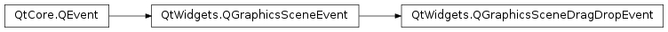

QGraphicsSceneDragDropEvent¶
Synopsis¶
Functions¶
- def
acceptProposedAction() - def
buttons() - def
dropAction() - def
mimeData() - def
modifiers() - def
pos() - def
possibleActions() - def
proposedAction() - def
scenePos() - def
screenPos() - def
setButtons(buttons) - def
setDropAction(action) - def
setModifiers(modifiers) - def
setPos(pos) - def
setPossibleActions(actions) - def
setProposedAction(action) - def
setScenePos(pos) - def
setScreenPos(pos) - def
source()
Detailed Description¶
The
PySide2.QtWidgets.QGraphicsSceneDragDropEventclass provides events for drag and drop in the graphics view framework.
PySide2.QtWidgets.QGraphicsViewinherits the drag and drop functionality provided byPySide2.QtWidgets.QWidget. When it receives a drag and drop event, it translates it to aPySide2.QtWidgets.QGraphicsSceneDragDropEvent.
PySide2.QtWidgets.QGraphicsSceneDragDropEventstores events of typeGraphicsSceneDragEnter,GraphicsSceneDragLeave,GraphicsSceneDragMove, orGraphicsSceneDrop.
PySide2.QtWidgets.QGraphicsSceneDragDropEventcontains the position of the mouse cursor in both item, scene, and screen coordinates; this can be retrieved withPySide2.QtWidgets.QGraphicsSceneDragDropEvent.pos(),PySide2.QtWidgets.QGraphicsSceneDragDropEvent.scenePos(), andPySide2.QtWidgets.QGraphicsSceneDragDropEvent.screenPos().The scene sends the event to the first
PySide2.QtWidgets.QGraphicsItemunder the mouse cursor that accepts drops; a graphics item is set to accept drops withPySide2.QtWidgets.QGraphicsItem.setAcceptDrops().
-
class
PySide2.QtWidgets.QGraphicsSceneDragDropEvent([type=None])¶ Parameters: type – PySide2.QtCore.QEvent.TypeConstructs a new
PySide2.QtWidgets.QGraphicsSceneDragDropEventof the specifiedtype. The type can be eitherQEvent.GraphicsSceneDragEnter,QEvent.GraphicsSceneDragLeave,QEvent.GraphicsSceneDragMove, orQEvent.GraphicsSceneDrop.
-
PySide2.QtWidgets.QGraphicsSceneDragDropEvent.acceptProposedAction()¶ Sets the proposed action as accepted, i.e, the drop action is set to the proposed action. This is equal to:
setDropAction(proposedAction())
When using this function, one should not call
accept().
Return type: PySide2.QtCore.Qt.MouseButtonsReturns a
Qt.MouseButtonsvalue indicating which buttons were pressed on the mouse when this mouse event was generated.See also
Qt.MouseButtons
-
PySide2.QtWidgets.QGraphicsSceneDragDropEvent.dropAction()¶ Return type: PySide2.QtCore.Qt.DropActionReturns the action that was performed in this drag and drop. This should be set by the receiver of the drop and is returned by
QDrag.exec().
-
PySide2.QtWidgets.QGraphicsSceneDragDropEvent.mimeData()¶ Return type: PySide2.QtCore.QMimeDataThis function returns the MIME data of the event.
-
PySide2.QtWidgets.QGraphicsSceneDragDropEvent.modifiers()¶ Return type: PySide2.QtCore.Qt.KeyboardModifiersReturns the keyboard modifiers that were pressed when the drag and drop event was created.
See also
Qt.KeyboardModifiers
-
PySide2.QtWidgets.QGraphicsSceneDragDropEvent.pos()¶ Return type: PySide2.QtCore.QPointFReturns the mouse position of the event relative to the view that sent the event.
-
PySide2.QtWidgets.QGraphicsSceneDragDropEvent.possibleActions()¶ Return type: PySide2.QtCore.Qt.DropActionsReturns the possible drop actions that the drag and drop can result in.
See also
Qt.DropActions
-
PySide2.QtWidgets.QGraphicsSceneDragDropEvent.proposedAction()¶ Return type: PySide2.QtCore.Qt.DropActionReturns the drop action that is proposed, i.e., preferred. The action must be one of the possible actions as defined by
possibleActions().See also
Qt.DropActionPySide2.QtWidgets.QGraphicsSceneDragDropEvent.possibleActions()
-
PySide2.QtWidgets.QGraphicsSceneDragDropEvent.scenePos()¶ Return type: PySide2.QtCore.QPointFReturns the position of the mouse in scene coordinates.
-
PySide2.QtWidgets.QGraphicsSceneDragDropEvent.screenPos()¶ Return type: PySide2.QtCore.QPointReturns the position of the mouse relative to the screen.
-
PySide2.QtWidgets.QGraphicsSceneDragDropEvent.setButtons(buttons)¶ Parameters: buttons – PySide2.QtCore.Qt.MouseButtonsSets the mouse buttons that were pressed when the event was created to
buttons.See also
Qt.MouseButtonsPySide2.QtWidgets.QGraphicsSceneDragDropEvent.buttons()
-
PySide2.QtWidgets.QGraphicsSceneDragDropEvent.setDropAction(action)¶ Parameters: action – PySide2.QtCore.Qt.DropActionThis function lets the receiver of the drop set the drop action that was performed to
action, which should be one of thepossible actions. Callaccept()in stead ofacceptProposedAction()if you use this function.See also
PySide2.QtWidgets.QGraphicsSceneDragDropEvent.dropAction()PySide2.QtCore.QEvent.accept()PySide2.QtWidgets.QGraphicsSceneDragDropEvent.possibleActions()
-
PySide2.QtWidgets.QGraphicsSceneDragDropEvent.setModifiers(modifiers)¶ Parameters: modifiers – PySide2.QtCore.Qt.KeyboardModifiersSets the keyboard modifiers that were pressed when the event was created to
modifiers.See also
Qt.KeyboardModifiersPySide2.QtWidgets.QGraphicsSceneDragDropEvent.modifiers()
-
PySide2.QtWidgets.QGraphicsSceneDragDropEvent.setPos(pos)¶ Parameters: pos – PySide2.QtCore.QPointFSets the position of the mouse to
pos; this should be relative to the widget that generated the event, which normally is aPySide2.QtWidgets.QGraphicsView.See also
PySide2.QtWidgets.QGraphicsSceneDragDropEvent.pos()setScenePos()setScreenPos()
-
PySide2.QtWidgets.QGraphicsSceneDragDropEvent.setPossibleActions(actions)¶ Parameters: actions – PySide2.QtCore.Qt.DropActionsSets the possible drop actions that the drag can result in to
actions.See also
Qt.DropActionsPySide2.QtWidgets.QGraphicsSceneDragDropEvent.possibleActions()
-
PySide2.QtWidgets.QGraphicsSceneDragDropEvent.setProposedAction(action)¶ Parameters: action – PySide2.QtCore.Qt.DropActionSets the proposed action to
action. The proposed action is aQt.DropActionthat is one of the possible actions as given bypossibleActions().
-
PySide2.QtWidgets.QGraphicsSceneDragDropEvent.setScenePos(pos)¶ Parameters: pos – PySide2.QtCore.QPointFSets the scene position of the mouse to
pos.See also
PySide2.QtWidgets.QGraphicsSceneDragDropEvent.scenePos()setScreenPos()setPos()
-
PySide2.QtWidgets.QGraphicsSceneDragDropEvent.setScreenPos(pos)¶ Parameters: pos – PySide2.QtCore.QPointSets the mouse position relative to the screen to
pos.See also
PySide2.QtWidgets.QGraphicsSceneDragDropEvent.screenPos()setScenePos()setPos()
-
PySide2.QtWidgets.QGraphicsSceneDragDropEvent.source()¶ Return type: PySide2.QtWidgets.QWidgetThis function returns the
PySide2.QtWidgets.QGraphicsViewthat created thePySide2.QtWidgets.QGraphicsSceneDragDropEvent.
© 2018 The Qt Company Ltd. Documentation contributions included herein are the copyrights of their respective owners. The documentation provided herein is licensed under the terms of the GNU Free Documentation License version 1.3 as published by the Free Software Foundation. Qt and respective logos are trademarks of The Qt Company Ltd. in Finland and/or other countries worldwide. All other trademarks are property of their respective owners.